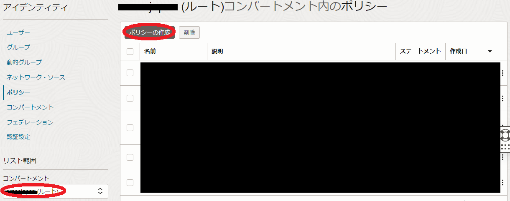
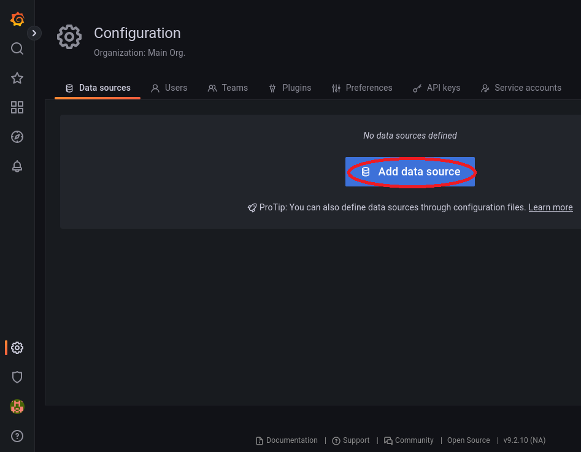
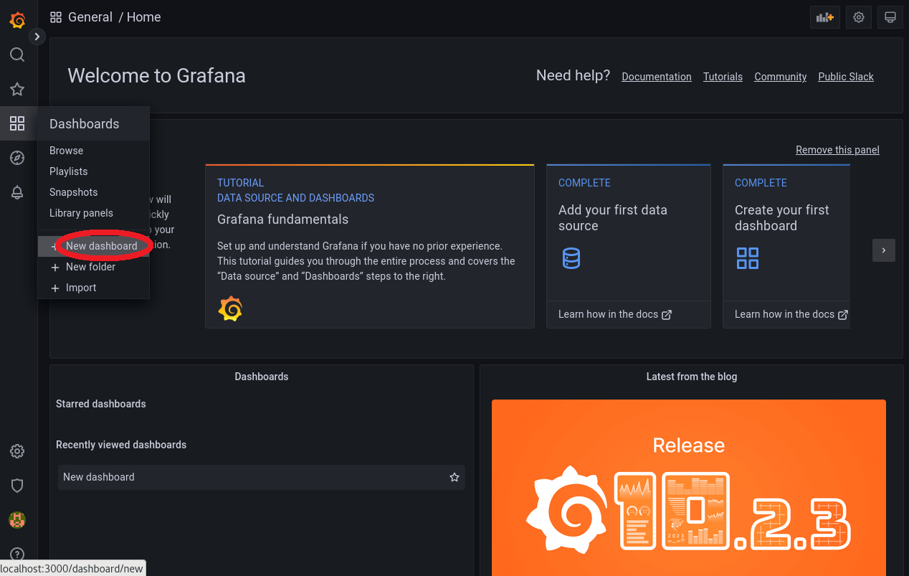

HPCワークロードや機械学習ワークロードを実行するHPC/GPUクラスタは、ワークロード実行中のCPU/GPU使用率、メモリ使用率、ネットワーク使用帯域等のメトリックを定期的に監視し、高価な計算資源を有効活用することが求められますが、ノード数が多くなるHPC/GPUクラスタでは、これらメトリックの監視が一元的・効率的に行える必要があります。
OCI上にこのフレームワークを構築する際、活用できるソフトウェアはいくつかありますが、 OCIモニタリング と Grafana を統合したメトリック監視は、 Grafana の多彩な機能を活用できる点で有力な選択肢です。
本テクニカルTipsは、 OCIモニタリング と Grafana を使用してHPC/GPUクラスタのメトリックを効率的に監視する方法を解説します。
注意 : 本コンテンツ内の画面ショットは、現在のOCIコンソール画面と異なっている場合があります。
0. 概要
本テクニカルTipsで構築するHPC/GPUクラスタのメトリック監視フレームワークは、以下のサブシステムから構成されます。
これらのサブシステムのOSは、 Oracle Linux 8を前提に解説します。
- Grafanaサーバ（1ノード）
OCIモニタリング から計算/GPUノードの監視対象メトリックを収集し、ウェブブラウザに対してこれを表示します。
本テクニカルTipsでは、インターネットに接続するメトリック監視端末からSSHのポートフォワードで Grafana のGUIにアクセスするため、パブリックサブネットに接続します。 -
計算/GPUノード（1ノード以上の任意のノード数）
監視対象メトリックを収集し、 OCIモニタリング にこれを送信します。
本テクニカルTipsでは、プライベートサブネットに接続します。
この際、計算/GPUノードから OCIモニタリング にメトリックを送信する経路として、このプライベートサブネットに サービス・ゲートウェイ を適切な ルート表 と共に作成しておく必要があります。これらのリソースは、ウィザードで 仮想クラウド・ネットワーク を作成した場合、自動的に作成されます。（※1）※1）この詳細は、 OCIチュートリアル の その2 - クラウドに仮想ネットワーク(VCN)を作る を参照ください。
またこのメトリック監視フレームワークは、以下のOCIサービスやソフトウェアを組合せて実現します。
- OCIモニタリング
OCIリソースから生成されるあらゆるメトリックをスケーラブルに扱うことを可能にする、メトリック管理のためのマネージドサービスです。 - コンピュート・インスタンスのモニタリング プラグイン
CPU・メモリ・ディスク・ネットワーク（ クラスタ・ネットワーク を除く）関連メトリックを OCIモニタリング に送信する Oracle Cloud Agent （以降 OCA と呼称）のプラグインで、計算/GPUノードで動作します。 - Compute RDMA GPU Monitroing プラグイン
クラスタ・ネットワーク に接続するNICのハードウェアカウンタ（累積送受信バイト/パケット数）メトリックを OCIモニタリング に送信する OCA のプラグインで、計算/GPUノードで動作します。 - Grafana with OCI Metrics plugin
OCIモニタリング からメトリックを読み込むための OCI Metrics プラグインをインストールした Grafana で、Grafanaサーバで動作します。
本テクニカルTipsで使用するバージョンは、 Grafana が 9.2.10 で OCI Metrics プラグインが 5.0.3 です。
Grafanaサーバは、 ここで動作する Grafana の OCI Metrics プラグインが OCIモニタリング からメトリックを読み込むため、 インスタンス・プリンシパル 認証で必要な権限を付与しておく必要があります。
また計算/GPUノードは、ここで動作する Compute RDMA GPU Monitroing プラグインが OCIモニタリング にメトリックを注入するため、やはり インスタンス・プリンシパル 認証で必要な権限を付与しておく必要があります。
以上より本メトリック監視フレームワークの構築は、以下の手順に沿って行います。
- インスタンス・プリンシパル 認証設定
- OCA プラグイン設定
- Grafana インストール・設定
本テクニカルTipsで構築するメトリック監視フレームワークは、HPC/GPUクラスタ内のメトリックを Grafana のあらゆる機能を駆使して監視することが出来ますが、代表的な監視方法は対象の計算/GPUノードのメトリックを以下のように時系列グラフで確認することです。
以降では、 クラスタ・ネットワーク に接続する2ノードの計算/GPUノードとGrafanaサーバが既にデプロイされていることを前提とし、前述の手順に沿ってOCIサービスやこれらインスタンスへのソフトウェアのインストール・設定を実施、その後上記のCPU使用率、メモリ使用率、及び クラスタ・ネットワーク 通信帯域幅を時系列グラフで表示する Grafana のダッシュボードを作成する方法を解説します。
1. インスタンス・プリンシパル認証設定
1-0. 概要
本章は、Grafanaサーバで動作する Grafana の OCI Metrics プラグインが OCIモニタリング からメトリックを読み込み、計算/GPUノードで動作する Compute RDMA GPU Monitroing プラグインが OCIモニタリング にメトリックを注入するため、 動的グループ と IAMポリシー を作成して インスタンス・プリンシパル 認証を設定します。
1-1. 動的グループ作成
本章は、計算/GPUノードとGrafanaサーバを含む 動的グループ を作成します。
-
OCIコンソールにログインし、 アイデンティティとセキュリティ → ドメイン とメニューを辿ります。
-
表示される以下 xxxx（ルート）コンパートメント内のドメイン 画面で、 インスタンス・プリンシパル 認証を設定する アイデンティティ・ドメイン を選択します。（複数の アイデンティティ・ドメイン を運用していなければ、通常”Default”です。）
-
表示される画面左側の 動的グループ メニューを選択します。
-
表示される以下 Defaultドメイン内の動的グループ 画面で、 動的グループの作成 ボタンをクリックします。

-
表示される以下 動的グループの作成 画面で、各フィールドに以下の情報を入力し 作成 ボタンをクリックします。
なお、ここに記載のないフィールドは、デフォルトのままとします。- 名前 ： 動的グループ に付与する名前
- 説明 ： 動的グループ に付与する説明（用途等）
-
ルール1 ： 動的グループ に含める計算/GPUノードのインスタンスを格納する コンパートメント のOCIDを指定する以下構文
Any {instance.compartment.id = 'compartment_ocid'} -
ルール2 ： 動的グループ に含めるGrafanaサーバのインスタンスのOCIDを指定する以下構文
Any {instance.id = 'grafana_server_ocid'}
1-2. IAMポリシー作成
本章は、作成した 動的グループ に対する IAMポリシー を作成します。
-
OCIコンソールにログインし、 アイデンティティとセキュリティ → ポリシー とメニューを辿ります。
-
表示される以下 xxxxコンパートメント内のポリシー 画面で、 ポリシーの作成 ボタンをクリックします。
この際、 コンパートメント プルダウンメニューで ルート・コンパートメント を指定します。
-
表示される以下 ポリシーの作成 画面で、各フィールドに以下の情報を入力し 作成 ボタンをクリックします。
なお、ここに記載のないフィールドは、デフォルトのままとします。- 名前 ： IAMポリシー に付与する名前
- 説明 ： IAMポリシー に付与する説明（用途等）
-
ポリシー・ビルダー ： 作成する IAMポリシー を指定する以下構文
（ 手動エディタの表示 ボタンをクリックして表示）allow dynamic-group dynamicgroup_name to read compartments in tenancy allow dynamic-group dynamicgroup_name to read metrics in tenancy allow dynamic-group dynamicgroup_name to manage all-resources in compartment id comp_ocid_compute_reside※2）動的グループ 名は、先に作成したものに置き換えます。
※3）3行目の コンパートメント OCIDは、計算/GPUノードを格納する コンパートメント のOCIDに置き換えます。
※4）最初の2行のポリシーは、Grafanaサーバの OCI Metrics プラグインが OCIモニタリング からメトリックを読み込むために必要です。
※5）3行目のポリシーは、計算/GPUノードの Compute RDMA GPU Monitroing プラグインが OCIモニタリング にメトリックを注入するために必要です。
2. Oracle Cloud Agentプラグイン設定
本章は、計算/GPUノードで OCA のプラグインを有効化します。
なお、 OCA がインストールされていない場合は、 ここ の手順でインストールします。
OCIコンソールにログインし、以下監視対象の計算/GPUノードの インスタンスの詳細 画面で Oracle Cloudエージェント タブをクリックし、 Compute RDMA GPU Monitroing プラグインと コンピュート・インスタンスのモニタリング プラグインを 有効 にします。
以下画面のように、 Compute RDMA GPU Monitroing プラグインと コンピュート・インスタンスのモニタリング プラグインのステータスが 実行中 となれば、有効化が完了しています。
ステータスが 実行中 となるまで、10分程度の時間を要します。
なお、既に 有効 となっているプラグインは、本手順をスキップしますが、この場合先の インスタンス・プリンシパル 認証の設定を有効化するため、当該計算/GPUノードのopcユーザで以下コマンドを実行し、 OCA を再起動します。
$ sudo systemctl restart oracle-cloud-agent
3. Grafanaインストール・設定
本章は、Grafanaサーバで Grafana のインストールとその設定を行い、メトリック監視端末のブラウザから Grafana にアクセスしてその稼働を確認します。
-
opcユーザで以下コマンドを実行し、 Grafana と OCI Metrics プラグインをインストール・起動します。
$ sudo dnf install -y grafana $ sudo grafana-cli plugins install oci-metrics-datasource $ sudo systemctl enable --now grafana-server -
メトリック監視端末で以下コマンドを実行し、Grafanaサーバの Grafana にアクセスするためのSSHポートフォワードを作成します。
$ ssh opc@grafana_ip -L 3000:localhost:3000※6）GrafanaサーバのIPアドレスは、自身の環境に合わせて置き換えます。
-
メトリック監視端末のブラウザのアドレスバーに以下を入力し、 Grafana にアクセスします。
http://localhost:3000/以下ログイン画面が表示されたら、ユーザ名 admin 初期パスワード admin でログインし、パスワードを変更します。

-
以下画面の Data sources メニューをクリックします。

-
以下画面の Add data source ボタンをクリックします。

-
以下画面のサーチフィールドに oracle と入力し、表示される Oracle Cloud Infrastructure Metrics ボタンをクリックします。
-
以下画面の Authentication Provider プルダウンメニューで OCI Instance を選択し、 Save & test ボタンをクリックし、
以下画面のように Success と表示されれば、 OCI Metrics プラグインが OCIモニタリング にアクセス可能であることを確認することが出来ます。
4. Grafanaダッシュボード作成
4-0. 概要
本章は、監視対象の計算/GPUノードの以下メトリックの時系列グラフをパネルに持つ Grafana のダッシュボードを作成します。
- CPU使用率（％）
- メモリ使用率（％）
- クラスタ・ネットワーク への送信帯域幅（GB/s）
- クラスタ・ネットワーク からの受信帯域幅（GB/s）
以下は、その作成例です。
4-1. CPU使用率パネル作成
-
メトリック監視端末のブラウザで Grafana にログインし、以下画面の New dashboard メニューをクリックします。

-
以下画面の Add a new panel ボタンをクリックします。
-
画面左下の以下 Query パネルで、各フィールドに以下の情報を入力します。
- REGION プルダウンメニュー： 監視対象の計算/GPUノードの存在する リージョン
- COMPARTMENT プルダウンメニュー： 監視対象の計算/GPUノードの存在する コンパートメント
- NAMESPACE プルダウンメニュー： oci_computeagent
- METRIC プルダウンメニュー： CpuUtilization
- AGGREGATION プルダウンメニュー： average
- INTERVAL プルダウンメニュー： 1 minute
- DIMENSIONS フィールド： 監視対象の計算/GPUノードを含む インスタンス・プール のOCID
（フィールドに任意の文字を入力して表示されるプルダウンメニューから instancePoolId で始まる該当するOCIDを選択）
-
画面右側の以下 Panel options フィールドを以下のように設定します。
- Title フィールド： CPU utilization
-
画面右側の以下 Standard options フィールドを以下のように設定します。
- Unit フィールド： Percent (0-100)
画面左上に以下のCPU使用率の時系列グラフが表示されることを確認し、 Apply ボタンをクリックします。
4-2. メモリ使用率パネル作成
-
画面右上の以下ボタンをクリックします。
-
以下の Add a new panel ボタンをクリックします。
-
4-1. CPU使用率パネル作成 の ステップ3. を METRIC プルダウンメニューのみ MemoryUtilization に変更して実行します。
-
画面右側の以下 Panel options フィールドを以下のように設定します。
- Title フィールド： Memory utilization
-
画面右側の以下 Standard options フィールドを以下のように設定します。
- Unit フィールド： Percent (0-100)
画面左上に以下のメモリ使用率の時系列グラフが表示されることを確認し、 Apply ボタンをクリックします。
4-3. クラスタ・ネットワークへの送信帯域幅パネル作成
-
画面右上の以下ボタンをクリックします。
-
以下の Add a new panel ボタンをクリックします。
-
画面左下の以下 Query パネルで、各フィールドに以下の情報を入力します。
- REGION プルダウンメニュー： 監視対象の計算/GPUノードの存在する リージョン
- COMPARTMENT プルダウンメニュー： 監視対象の計算/GPUノードの存在する コンパートメント
- NAMESPACE プルダウンメニュー： rdma_infrastructure_health
- METRIC プルダウンメニュー： RdmaTxBytes
- AGGREGATION プルダウンメニュー： per-interval average rate of change
- INTERVAL プルダウンメニュー： 1 minute
- DIMENSIONS フィールド： 監視対象の計算/GPUノードを含む インスタンス・プール のOCID
（フィールドに任意の文字を入力して表示されるプルダウンメニューから instancePoolId で始まる該当するOCIDを選択）
-
画面右側の以下 Panel options フィールドを以下のように設定します。
- Title フィールド： Cluster network Tx bandwidth
-
画面右側の以下 Standard options フィールドを以下のように設定します。
- Unit フィールド： bytes/sec(SI)
画面左上に以下の クラスタ・ネットワーク への送信帯域幅（GB/s）の時系列グラフが表示されることを確認し、 Apply ボタンをクリックします。
4-4. クラスタ・ネットワークからの受診帯域幅パネル作成
-
画面右上の以下ボタンをクリックします。
-
以下の Add a new panel ボタンをクリックします。
-
4-3. クラスタ・ネットワークへの送信帯域幅パネル作成 の ステップ3. を METRIC プルダウンメニューのみ RdmaRxBytes に変更して実行します。
-
画面右側の以下 Panel options フィールドを以下のように設定します。
- Title フィールド： Cluster network Rx bandwidth
-
画面右側の以下 Standard options フィールドを以下のように設定します。
- Unit フィールド： bytes/sec(SI)
画面左上に以下の クラスタ・ネットワーク からの受信帯域幅（GB/s）の時系列グラフが表示されることを確認し、 Apply ボタンをクリックします。
以上で、 Grafana ダッシュボードの作成は完了です。